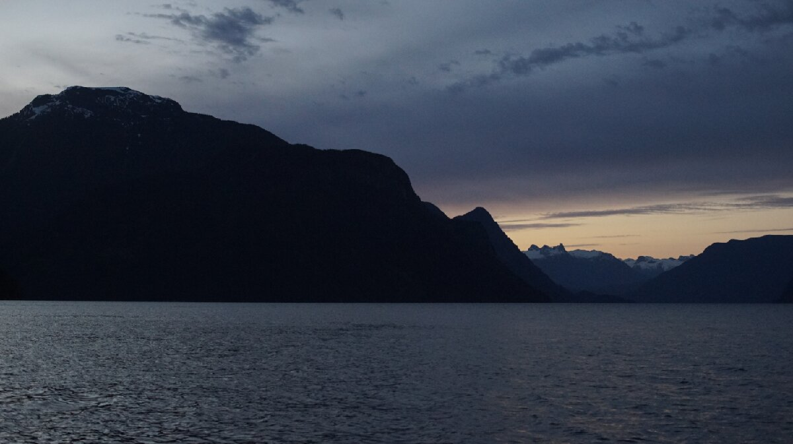

frances bay
We visited this anchorage on May 11th 2024, no one else was anchored there that day. Located just south to the entrance to Bute Inlet, Frances Bay is a deep water anchorage surrounded by tall hills. It offers protection from NW winds, but is open to the south.
With no south wind on the forecast, we thought it safe. One issue with this bay is that there is submerged logging equipment fouling certain areas. There is a logging ramp on the NW side, so we assumed that the cable people keep fouling their anchors on stretches out from that point, and seems to reach the other side of the bay (according to a commenter on the Navionics community edits).
We anchored north of the equipment (position: 50°20.984'N 125°2.542W), tied a trip line to the crown of our anchor, tied a floating fender to a line matching a bit over the depth of the water (ours was 75 feet) and dropped the anchor in 35 feet of water. We arrived at low tide, and so we scoped for an additional 18 feet of tide for when the tide would rise to a total of 53 feet.
A dock fender works well as a float, we've even used them to buoy our chain rode in coral-laden bottoms in French Polynesia (we had 3 keeping the chain afloat, a funny sight underwater). As we tied the fender to our trip line, the fender remembered being submerged for days and days and in the moment rather resented us for putting it through this, yet again. Before tossing it overboard, we promised it we would not try to submerge it this time. We added a trip line just in case the anchor got snagged on anything, it's easy to setup and is a good safety in an anchorage known to have a fouled bottom.
The bottom of this bay appears to be rock, so we backed up hard to make sure it was well set. Wind rolls down the hills in this anchorage, we got some powerful gusts almost all day and night. Funny enough, it only subsided once we woke up at 0500 to leave, thank you wind, for the long, sleepless night.
Our anchor did not budge, and when we raised it the next day it hadn't gotten snagged on anything. It is not the best anchorage, for many reasons, but at least it's 7 NM from the Yucultas. We would have preferred to wake up later, but catching this neap tide was important to us, even if it meant rising before the sun. In twilight, everything was visible, even the little while fender floating over our anchor ahead.